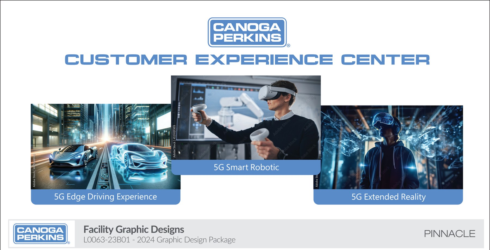
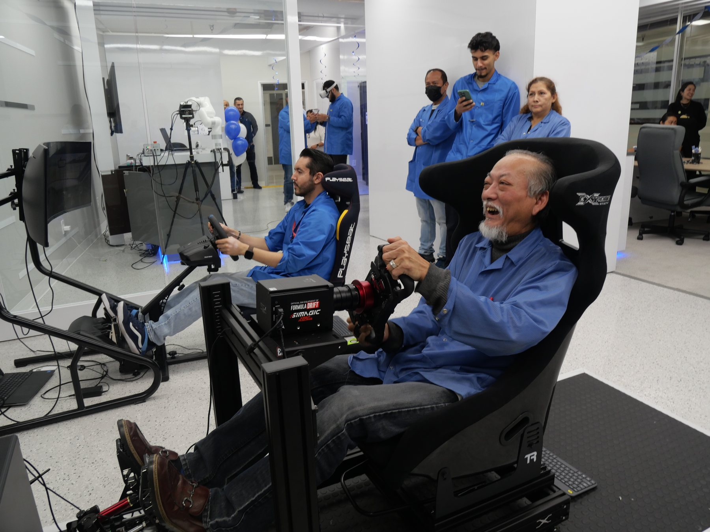

Stood up a hands-on demo center — VR walkthroughs, racing-sim environments, private 5G hardware live on the floor — that converted into $1.2M+ of qualified pipeline.


Prospects walk through the architecture instead of reading it. Comprehension up; meeting time down.
Racing-sim demo turns a slide bullet into a visceral experience. The demo argument is <1 second long.
Qualified pipeline tagged from CEC visits over a year of choreographed multi-stakeholder demo arcs.
You can describe sub-millisecond latency on a slide. Or you can hand someone a steering wheel and let them feel it. The CEC was a $1.2M argument that the second one converts.